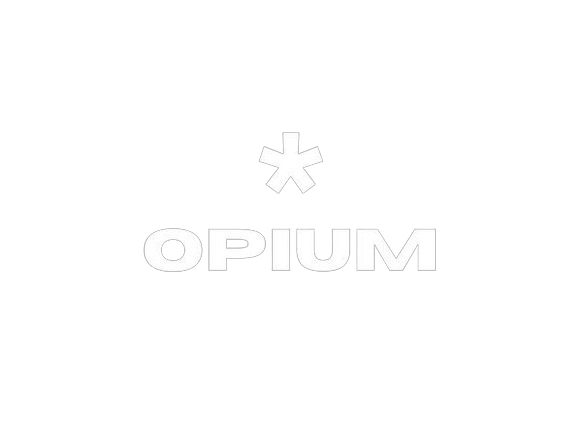
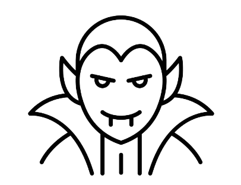
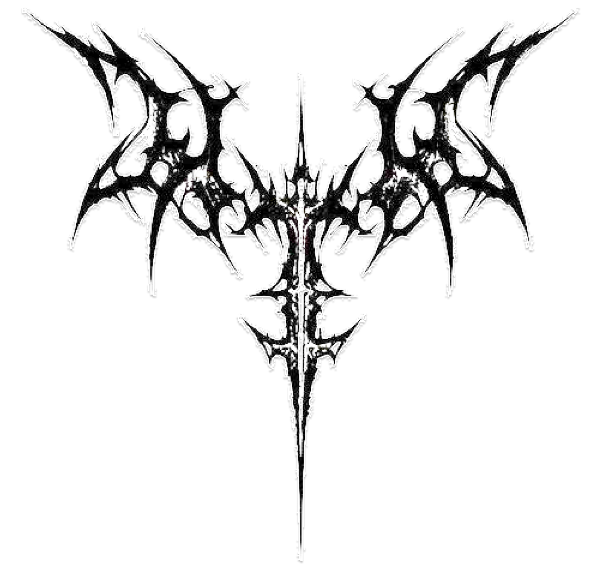
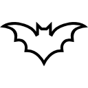
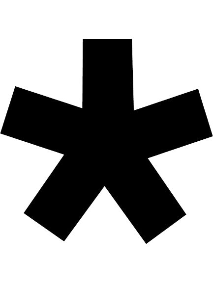

Dashboard
Ranking


Olá,

Sair
Opium Members:

0
Members
Álbum com a maior nota:
--
Álbum com a menor nota:
--

TOP 10 melhores álbuns
Porcentagem de genêros


.png) Porcentagem de genêros
Porcentagem de genêros